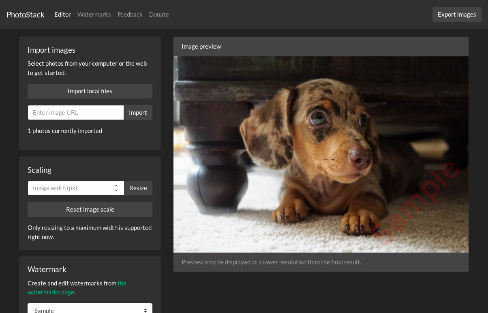
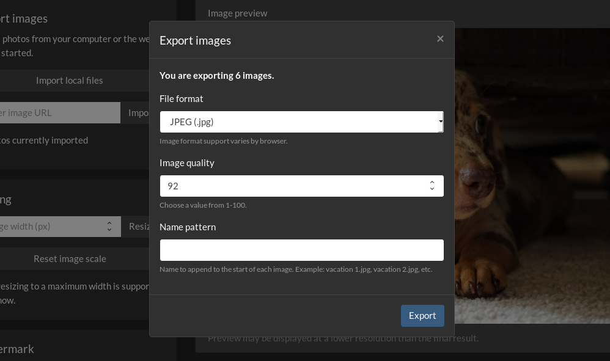
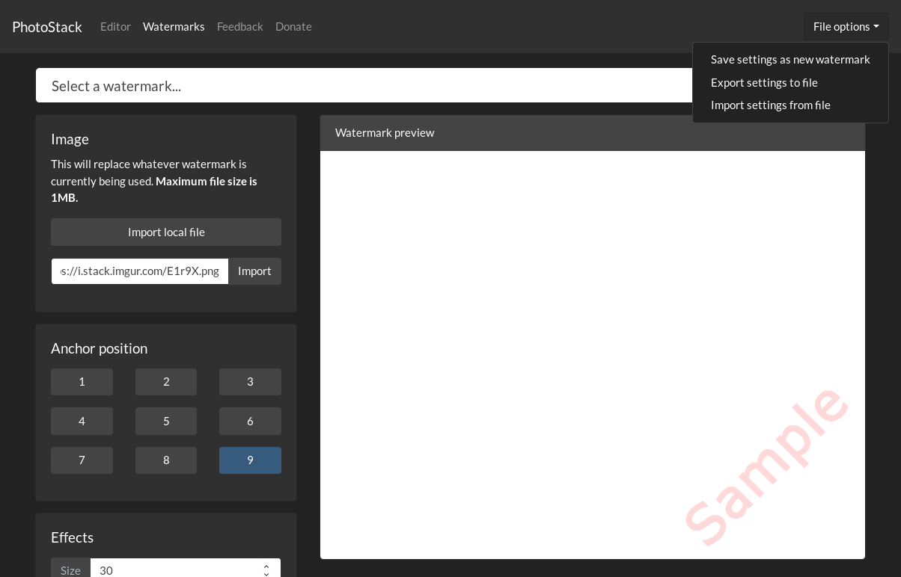

My work requires me to frequently add watermarks to photos, sometimes several at once. Previously, I used (what is now called) Adobe Lightroom Classic CC to do this, but Adobe released a new version in 2017 that lacks watermarking ability. I have no idea why over two years has passed and the feature is still missing, but I hate opening the older version just to export my pictures with a tiny logo.
To make matters more annoying, I frequently work on platforms where the old version of Lightroom was never available, like Linux. I couldn’t find an online tool I liked, so I thought I would make one myself — and one other people could use for their professional work. After a few months of development, I’m excited to finally release PhotoStack!

PhotoStack is a general-purpose batch photo editing tool that runs on the web. It can import photos from your files, or from a URL. Once you select the photos, you can resize them, add watermarks, and remove EXIF data. You also get plenty of options for exporting, like support for three different file formats (JPG, PNG, and WebP), packing the images in a ZIP file, and even saving to Dropbox.

The watermark editor should be familiar to anyone who has used Lightroom. You can select a watermark from your device (or from a URL), set a position on the image grid, and edit the size and opacity. Watermarks can be saved for use later, and you can even export them to a file, for importing on another browser/device.

PhotoStack has plenty of other features you might not notice at first glance. It’s a Progressive Web App, so it can be installed to your home screen/applications on Android (when using Chrome or Firefox), iOS, Chrome OS, and Windows/Mac/Linux (when using Chrome).
When you use PhotoStack on modern browsers, the entire application is saved to your device’s cache (don’t worry, it’s very small), so you can use it even when you’re not connected to the internet. Just type in photostack.app at any time.
Speaking of browsers, PhotoStack works on all of them — Chrome, Firefox, Opera, MS Edge, Safari, and even Internet Explorer (10+).
I primarily made PhotoStack to aid my own work (and to help out my co-workers who want to edit photos on Chromebooks), but want to make it a great tool for anyone to use. I’ll probably keep adding features as time goes on, and I have a few ideas I want to take a shot at.
If you want to suggest a feature, or report a bug, there are instructions here. You can try out PhotoStack right in your browser by visiting https://photostack.app.